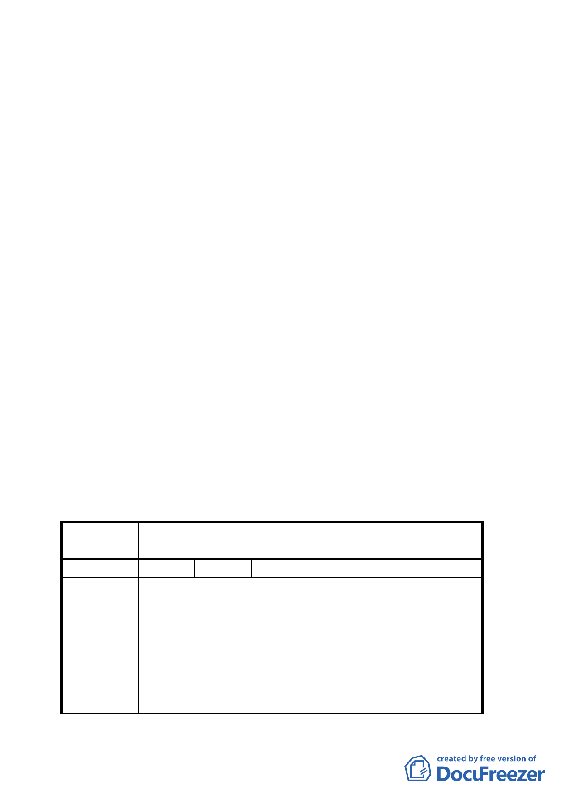

四、變更位置：詳計畫圖所示。
五、變更理由及內容：詳計畫書。
六、說明會日期：九十三年六月三日〈大安區公所〉。
七、公民或團體所提意見：計一件。
決議：
一、本案基於維持古蹟周邊建築景觀等公益理由，同意採唯一
個案方式處理，其計畫內容除下列修正決議外，其餘照案
通過：
（一）本案建築以容積率百分之二七五、高度二十二．八公
尺為上限。
（二）刪除附件一有關本案協商過程與計算方式等文字。
二、公民或團體所提意見審決如后附綜理表。
附帶決議：
請發展局、文化局儘速針對台北市所有古蹟及歷史性建築之
周邊建築開發行為、高度等管制，提出具體明文規定，以免
再有類似案例發生。
臺北市都市計畫委員會公民或團體所提意見綜理表
案
名
變更台北市大安區金華段二小段一九九地號土地第
三種住宅區為第三種住宅區（特）計畫案
編 號 １ 陳情人 馬超彥（台北市新生南路二段 62 號）
建議位置：大安區金華段二小段一九九地號。
建議理由：
該筆土地上之新建築物，將獲得放寬容積率至 270﹪，及
陳情理由
建蔽率 55﹪，但建築高度不得超過 228 公尺，係因緊鄰台
北清真寺古蹟保存區，避免新建築物高度影響古蹟景觀而
作之補償措施，但此一限制後之高度，仍將破壞原有景觀，
建議降低建築物高度至 18 公尺以下，以減少對景觀之衝
擊。
第 7 頁，共 9 頁